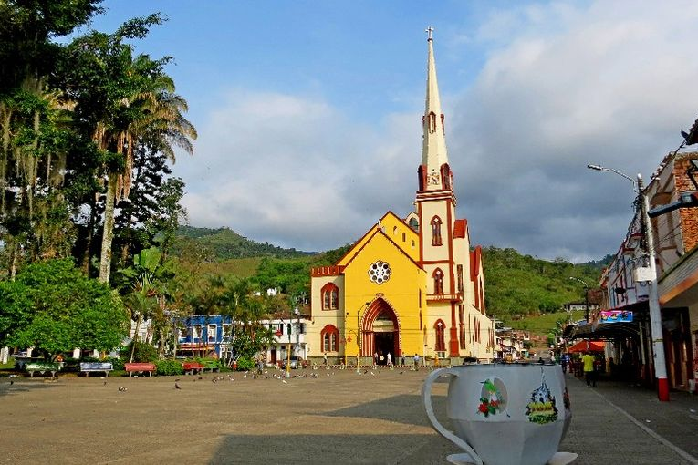
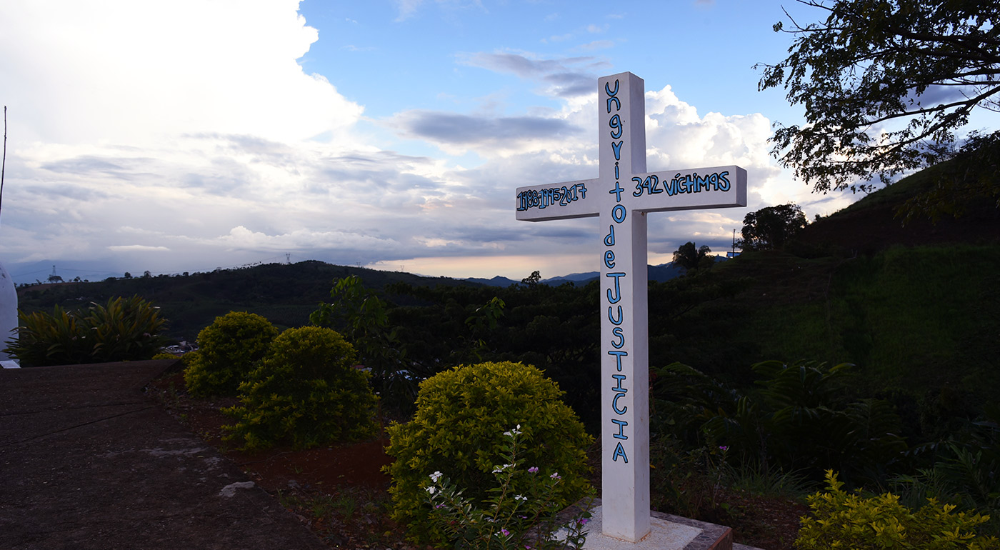

Paisaje Cultural Cafetero
Arquitectura de influencia antioqueña y caldense, con calles anchas, casas coloridas y cafetales tradicionales.
Un recorrido corto por el casco urbano de Trujillo, entre arquitectura, plazas y templos.
Arquitectura de influencia antioqueña y caldense, con calles anchas, casas coloridas y cafetales tradicionales.

Corazón del municipio, adornado por palmas centenarias.

Templo católico con una de las torres más altas del departamento.

Espacio de memoria histórica dedicado a las víctimas del conflicto armado en la región.